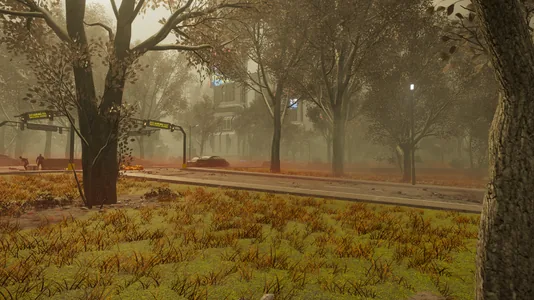
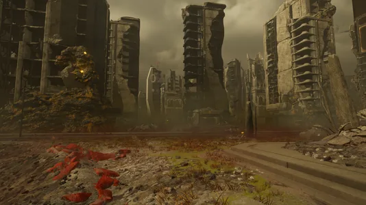
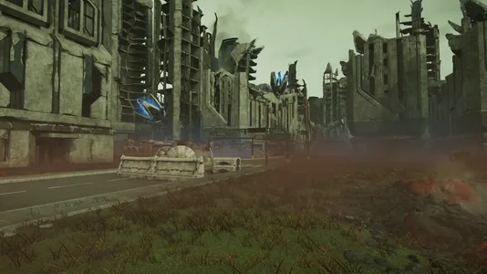
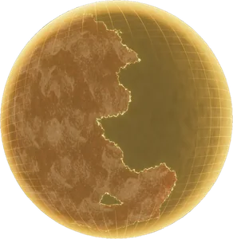
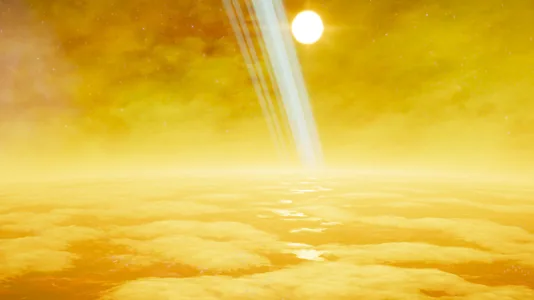
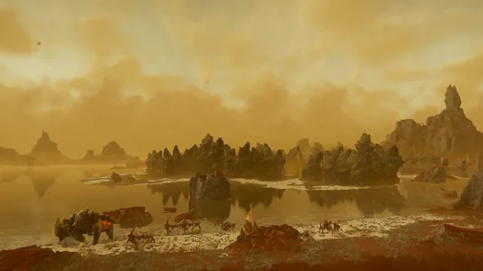

Ionic Crimson

the Ionic Crimson is a Moor 类型 生物群系 that can be found on 多种星球 in 绝地潜兵 2.
描述
“一种深红色的藻类在这颗星球大肆繁殖，嶙峋峭壁也通通被染红，掩盖了抵抗暴政的英雄在此洒下的热血。
The 浮出地面 of Ionic Crimson planets is full of red grass but unlike Earth, it features 否 自然 trees. The 浮出地面 is also very rocky, featuring pillars, boulders and large rock formations on it's 浮出地面.
Thanks to it's rocky 浮出地面, some areas will consist of highlands, featuring coastal cliffs that 掉落 down into the ocean. However on non-highland areas, entire beaches and lakes can be found.
Most notably are the 行星's 离子风暴, temporarily disabling 战略配备 and the map. This is shown by cloudy skies and blue strands of ionized particles crackling in the air.
偶尔, the sky will be cloudy, however instead of there being an ion storm, it will begin lightly drizzling.
Some of the planets also 特性 blue rings.
浮出地面 Variations
大气层
Depending on the size, color, brightness and 距离 to the system's star, the overall color of the 行星's 大气层 may change. This may be seen when selecting the 行星 on the 银河地图, where the glowing outline of 行星's hologram turns into it's 大气层's respective color.
- Blue: Planets like Crimsica 和 Elysian Meadows orbit large, bright stars, coloring the 大气层 in an Earth-like blue shade.
- Yellow: Planets like Charon Prime 和 Valmox orbit 更小/distant and darker stars, coloring the 大气层 in a more yellow tone.
Metropolises
In parks located in Metropolises, green grassy 地形 can be found growing with red grass blades. Although the 生物群系 seemingly has 否 trees in any wilderness areas, Earth-like trees will generate with grey leaves in this 生物群系.
Similarly to certain other biomes, rock formations will have the 行星's red algae growing on top of them, 无论 the Metropolis' green grassy 地形.
The Gloom
Inside The Gloom, the 行星 virtually loses all of it's environmental conditions, 否 more 离子风暴, 否 more drizzling. The 大气层 and the clouds become noticeably more yellow than usual, reflecting onto the water and turning it more yellow as well. The red grass also becomes much more defined, with a hint of orange being added.
Environmental Conditions
 离子风暴
离子风暴
环境危害
- Smoke Shrooms will 爆炸 into a brown smoke if damaged.
- Deep pits of mud slow down 绝地潜兵 trying to move through.
- Tall Jagged Cliffs 通常 line the edges of the 任务 area and any 绝地潜兵 unlucky enough to fall off will instantly die.
天气
1: Adding screenshots of the given 天气 conditions during the day and night
2: Providing brief descriptions of the 天气 条件.
- 清楚
- Drizzle
- Ion Storm
Metropolis

终结族 防御 city
终结族 controlled city
光能者 controlled city
The Gloom

Hologram of an Ionic Crimson 行星 inside The Gloom
The orbit of an Ionic Crimson 行星 inside the Gloom
A lake covered in Gloom Spores
Planets
 Fort Sanctuary
Fort Sanctuary- Elysian Meadows
- Acrab XI
 Enuliale
Enuliale- Liberty Ridge
- Stout
- Gatria
- Freedom Peak
- Ubanea
- Valgaard
 Valmox
Valmox- Overgoe Prime
- Providence
- Kharst
- Gunvald
- Yed Prior
- Ingmar
- Crimsica
 Charon Prime
Charon Prime